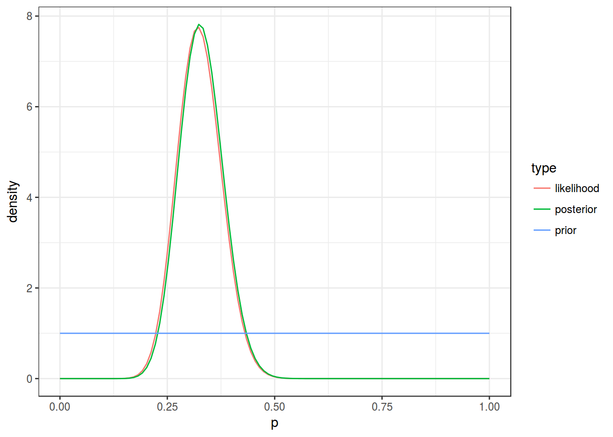

- Биномиальные данные
Г. Мороз
1. Введение
- ваши данные имеют два возможных исхода
- head vs. tail
- орел vs. решка
- 1 vs. 0
- выпадение 6 на кубике
- количество диалектных vs. недиалектных форм у одного информанта
- употребление слова кенгуру в некотором тексте
- …
- у вас есть идеи по поводу возможного распределения
1.1 Библиотеки:
library(tidyverse)
library(mosaic)2. Биномиальное распределение
\[P(k | n, θ) = \frac{n!}{k!(n-k)!} \times θ^k \times (1-θ)^{n-k} = {n \choose k} \times θ^k \times (1-θ)^{n-k}; 0 \leq θ \leq 1; n, k > 0\]
probabilities <- c(0.23, 0.33, 0.69)
density <- c(dbinom(x = 1:83, size = 83, prob = probabilities[1]),
dbinom(x = 1:83, size = 83, prob = probabilities[2]),
dbinom(x = 1:83, size = 83, prob = probabilities[3]))
params <- rep(paste("n = 83, p =", probabilities), each = 83)
id <- rep(1:83, 3)
binomials <- data_frame(density, params, id)
binomials %>%
ggplot(aes(id, density, fill = params))+
geom_polygon(alpha = 0.8)+
labs(title = "PDF для трех биномиальных распределений")+
theme_bw()
\(E[X] = np; D[X] = np\times(n-1)\)
3. Фриквентистский подход: Биномиальный тест
- Формулируем нулевую гипотезу: вероятность количества успехов статистически не отличается от ожидаемой вероятности.
- Формулируем альтернативную гипотезу: вероятность количества успехов статистически отличается от ожидаемой вероятности.
- Выбираем p-value (например, 0.05).
- Проводим статистический тест.
- Смотрим, какова вероятность получить такие или еще более экстремальные значения, при условии верной нулевой гипотезы.
binomial_test <- binom.test(x = 27, n = 83, p = 0.23)
binomial_test##
##
##
## data: 27 out of 83
## number of successes = 27, number of trials = 83, p-value = 0.04936
## alternative hypothesis: true probability of success is not equal to 0.23
## 95 percent confidence interval:
## 0.2264864 0.4369985
## sample estimates:
## probability of success
## 0.3253012binomials %>%
filter(params == "n = 83, p = 0.23") %>%
ggplot(aes(id, density))+
geom_line()+
geom_area(aes(x = ifelse(id>=qbinom(0.025, 83, 0.23) &
id<=qbinom(0.975, 83, 0.23), id, NA)),
fill = "lightblue")+
geom_vline(xintercept = 27, linetype = 2)+
scale_x_continuous(breaks = c(0, 12, 19, 27, 2:4*20))+
theme_bw()+
labs(title = "Биномиальное распределение с параметрами n = 83, p = 0.23",
subtitle = "Голубой — центральные 95% данных")
4. Хакерский подход: симуляция
set.seed(42)
do(1000)*
sum(sample(x = 1:0,
size = 83,
prob = c(0.23, 0.77),
replace = TRUE)) ->
simulations
simulations %>%
mutate(greater = sum >= 27) %>%
count(greater)simulations %>%
ggplot(aes(sum))+
geom_density(fill = "lightblue")+
geom_vline(xintercept = 27, linetype = 2)+
theme_bw()+
labs(title = "Распределение 1000 симуляций с параметрами n = 83, p = 0.23")
5. Бета распределение
\[f(x; α, β) = \frac{x^{α-1}\times (1-x)^{β-1}}{B(α, β)}; 0 \leq x \leq 1; α, β > 0\] Бета функция: \[Β(α, β) = \frac{Γ(α)\times Γ(β)}{Γ(α+β)} = \frac{(α-1)!(β-1)!}{(α+β-1)!} \]
x <- seq(0, 1, length = 100)
alpha <- c(23, 33, 69)
beta <- 83-alpha
density <- c(dbeta(x, shape1 = alpha[1], shape2 = beta[1]),
dbeta(x, shape1 = alpha[2], shape2 = beta[2]),
dbeta(x, shape1 = alpha[3], shape2 = beta[3]))
params <- rep(paste("α =", alpha, ", β =", beta), each = 100)
betas <- data_frame(density, params, id = rep(x, 3))
betas %>%
ggplot(aes(id, density, fill = params))+
geom_polygon(alpha = 0.8)+
labs(title = "PDF для трех бета распределений")+
theme_bw()
\[Ε[X] = \frac{α}{α+β}; D[X] = \frac{α\times β}{(α+β)^2(α+β+1)}\]
6. Байесовский подход
Байесовская статистика зиждится на формуле Байеса: \[P(θ|Data) = \frac{P(θ)\times P(Data|θ)}{P(Data)}\]
- \(P(Data|θ)\) — likelihood
- \(P(θ)\) — prior
- \(P(Data)\) — evidence
- \(P(θ|Data)\) — posterior
В фриквентисткой статистике есть некоторая вера в единое и непоколибимое значение \(θ\) генеральной совокупности, которое мы пытаемся оценить. Каждый наш эксперимент — это попытка взять некоторую выборку и на основе \(\hatθ\) этой выборки оценить \(θ\) генеральной совокупности. Таким образом данные, это источник \(\hatθ\), некоторое приближение к \(θ\), и если приближение по каким-то причинам нас не устраивает, значит нужно взять выборку большего размера. В байесовской статистике обязательно иметь какие-то предварительные представления или гипотезы о наших данных (сильные или слабые, я покажу ниже, что имеется в виду), которые мы обновляем на основании данных, которые мы получили. Таким образом, в фриквентистской статистике \(θ\) фиксировано, а данные вариативны (случайная выборка из генеральной совокупности), а в Байесовской статистике данные фиксированы, а \(θ\) может меняться (с каждыми новыми данными, которые к нам поступают).
Знаменатель формулы Байеса призван “доводить” полученную функцию плотности так чтобы ее интеграл был равен 1, то есть можно сказать, что произведение априорной вероятности на likelihood пропорционально апостериорной вероятности:
\[P(θ|Data) \propto P(θ) \times P(Data|θ)\]
Если мы вернемся к биномиальным данным, то легко можно показать, что likelihood имеет вид бета-распределения:
\[P(Data|θ) = P(i \text{ бросков монеты}|θ) = \prod_{i=1}^{n}P(i\text{-того броска монеты}|θ) = \prod_{i=1}^{n}θ^{k_i}\times(1-θ)^{(1-k_i)} = \] \[ = θ^{\sum_{i=1}^{n}k_i}\times(1-θ)^{\sum_{i=1}^{n}(1-k_i)} = θ^{\text{# успехов}}\times(1-θ)^\text{# неудач}\]
Что же касается априорной вероятности, то она в нашем случае, также должна иметь вид бета-распределения:
\[θ^{\text{# успехов}}\times(1-θ)^\text{# неудач}\]
И априорное распределение, и likelihood являются бета-распределениями, а главное при их перемножении получится так же бета-распределение, так что апостериорная вероятность имеет следующие вид:
\[\left(θ^{k_{prior}}\times(1-θ)^{n_{prior} - k_{prior}}\right) \times \left(θ^{k_{data}}\times(1-θ)^{n_{data} - k_{data}}\right) = θ^{k_{prior} + k_{data}}\times(1-θ)^{n_{prior} + n_{data} - k_{prior} - k_{data}}\]
Т. е. если у нас биномиальные данные, чтобы получить апостериорное распределение нужно просто прибавить к количеству априорных успехов, количество успехов в наших данных, а к количеству априорных неудач прибавить количество неудач в наших данных.
От формул — к делу. У нас есть \(n\) попыток (83), априорное \(\mu\) (0.23), и количество успехов \(k\) (27). Сначала, из априорного \(\mu\) нужно получить какое-нибудь значение \(\alpha\) и \(\beta\) для создания бета распределения.
\[\mu = \frac{\alpha}{\alpha+\beta} \Rightarrow \alpha = \mu \times (\alpha+\beta)\]
Если вспомнить, что \(\alpha + \beta\ \) это общее число наблюдений, то его можно взять из нашей задачи. Тогда:
\(\alpha_{aprior} = \mu \times n = 0.23 \times 83\)
alpha_prior <- 0.23*83
alpha_prior## [1] 19.09Вывести \(\beta_{prior}\) тоже ничего не стоит:
beta_prior <- 0.77*83
beta_prior## [1] 63.91Ну что же, теперь мы можем вывести апостериорные \(\alpha_{post}\) и \(\beta_{post}\):
alpha_data <- 27
beta_data <- 83 - 27
alpha_post <- alpha_prior + alpha_data
beta_post <- beta_prior + beta_dataМы готовы к визуализации:
x <- seq(0, 1, length = 100)
data_frame(p = rep(x, 3),
density = c(dbeta(x, alpha_prior, beta_prior),
dbeta(x, alpha_data, beta_data),
dbeta(x, alpha_post, beta_post)),
type = rep(c("prior", "likelihood", "posterior"), each = 100))%>%
ggplot(aes(x = p, y = density, color = type))+
geom_line()+
theme_bw()
Пик апостериорной вероятности приходится на:
alpha_post/(alpha_post+beta_post)## [1] 0.2776506А что если у Вас нет никаких идей про априорное распределение? В таком случае, можно использовать неинформативное априорное распределение с \(\alpha = 1\) и \(\beta = 1\):
x <- seq(0, 1, length = 100)
data_frame(p = rep(x, 3),
density = c(dbeta(x, 1, 1),
dbeta(x, alpha_data, beta_data),
dbeta(x, alpha_data + 1, beta_data + 1)),
type = rep(c("prior", "likelihood", "posterior"), each = 100))%>%
ggplot(aes(x = p, y = density, color = type))+
geom_line()+
theme_bw()
Однако стоит помнить, что неинформативное априорное расперделение многие ругают и не одобряют.Домашнее задание 3 (до 27.02.2018)
Домашнее задание нужно выполнять в отдельном rmarkdown файле, скачав данные из своей папки в репозитории курса. Получившиеся файлы следует помещать в соответствующую папку в своем репозитории на гитхабе. Более подробные инструкции см. на этой странице.
В вашей папке ледит файл с тремя значениями: \(n\) — количество попыток, \(k\) — количество успехов, \(prior\) — наши предворительные идеи относительно доли успехов.
1.1
Приведите результаты биномиального теста.
1.2
Приведите результаты симуляции, используя set.seed(42).
1.3
Приведите среднее апостериорного распределения, используя \(prior\) как средние априорного распределения, а \(n\) как количество элементов для вычисления апостериорного распределения.
1.4
Приведите среднее апостериорного распределения, используя неинформативное априорное распределение.
1.5
Представим, что Вы пишите статью, напишите короткий абзац, который бы обобщал результаты, полученные в предыдущих заданиях. Не забывайте приводить результаты статистических тестов.